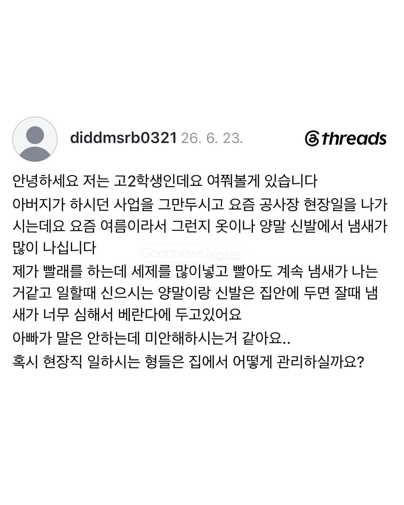
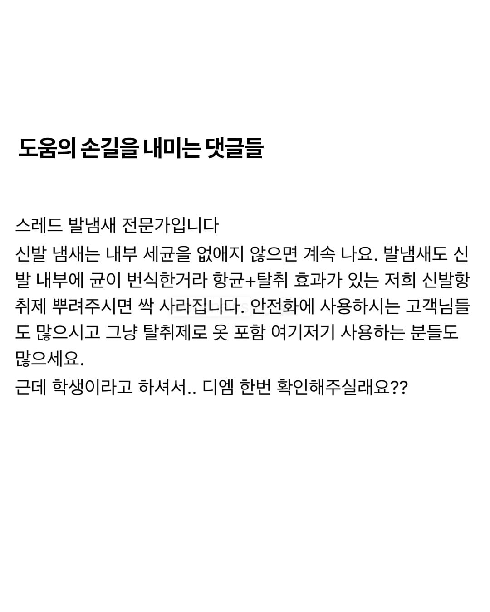
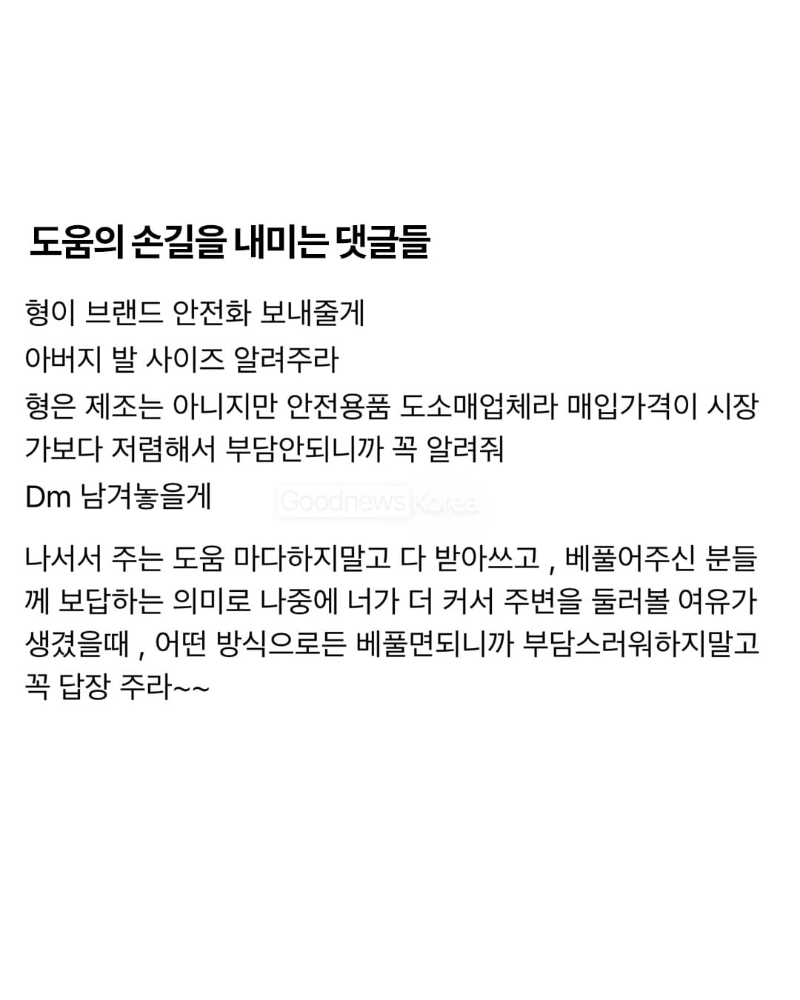
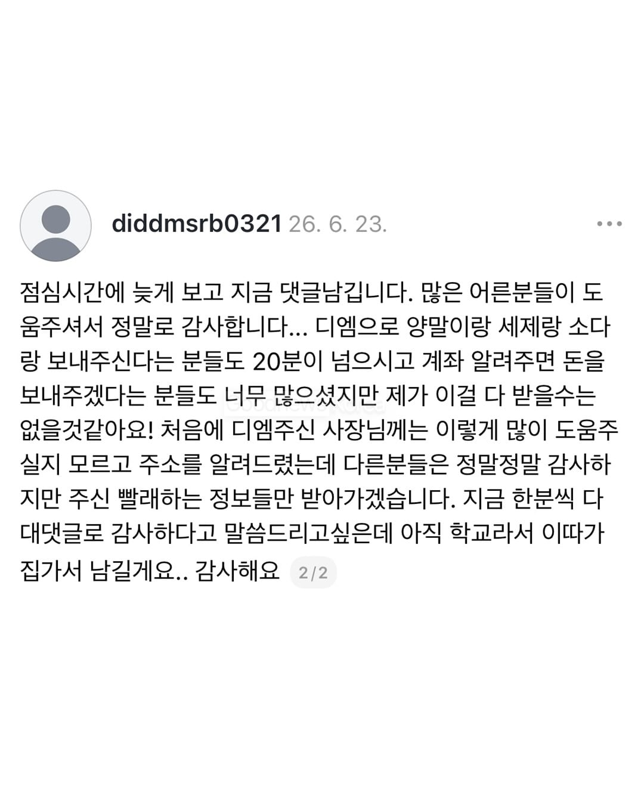
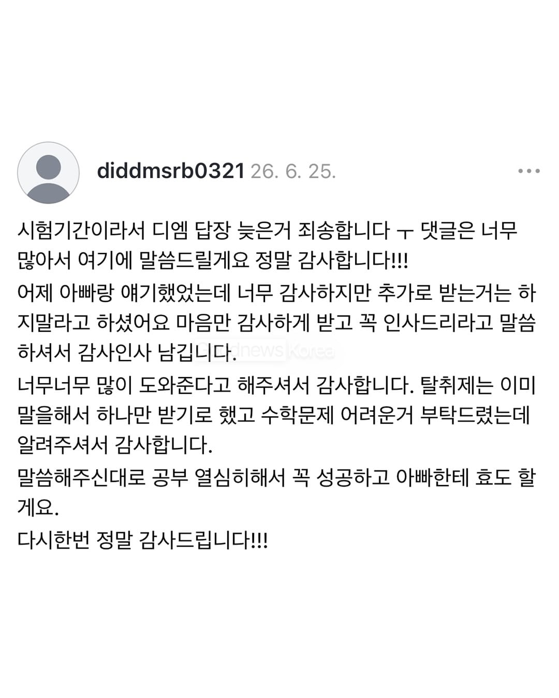
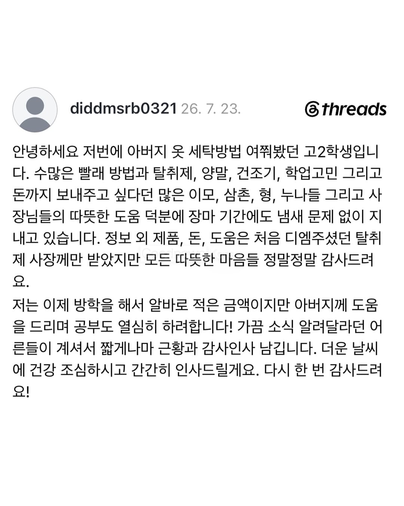
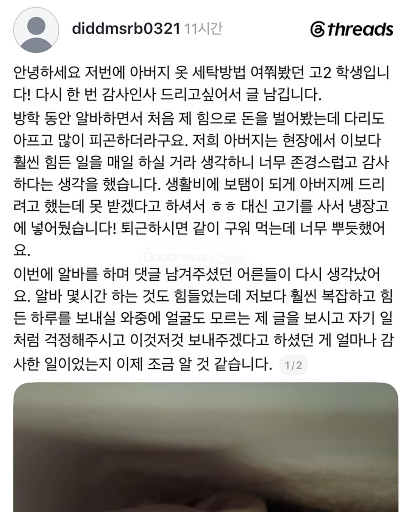
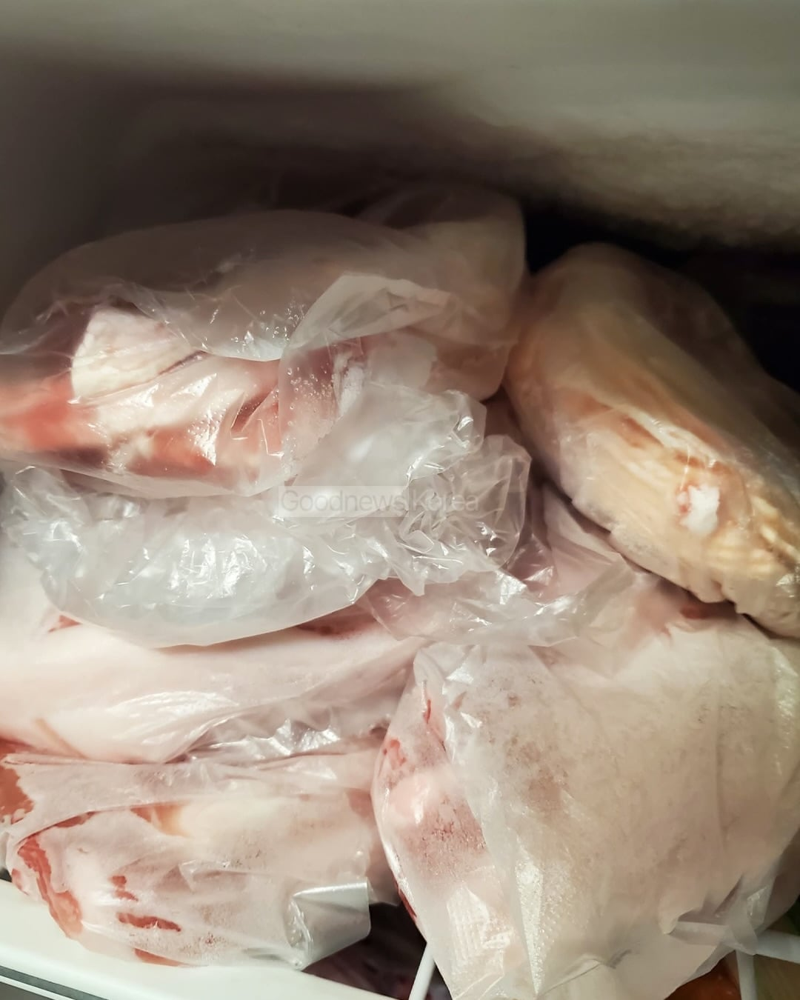
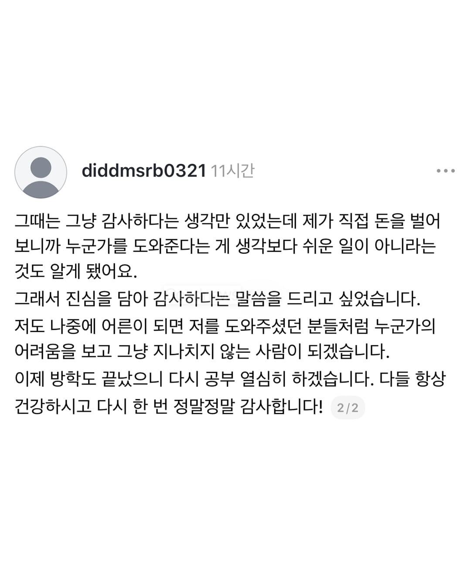

섬유유연제처럼 향균제 있는데 쓰고 나니까 효과 학실하더라
물묻히고 한번쭉짠다음에 전자레인지 1분돌리고 빨래 하면 삶은효과난다.
저런애는 결국 성공할꺼임
그래서 냄새 안나는 방법은 뭐냐고?????????,
과탄산소다
수건은 주기적으로 버리고 새거 사기
진짜 극단적처방으로는 락스 아주소량 넣으란말도있긴함ㅋㅋ 흰옷에 한정해서만
요새 살균되는 섬유유연제같은거 넣으면좋다고는하더라
하지만 집에 세탁기가없어서 정확하지는않고 카더라임
세탁 마지막에 런드리 세니타이저 넣거나
요즘 유명한 세제인 프락셀라인가? 그게 효과가 그렇게 좋다더라
아니면 세제랑 섬유유연제를 실내건조용으로 사는것도 방법임
통돌이 세탁기 기준. 물 가득 받고 락스 살짝 풀고 수건 10분 담갔다가 탈수해서 일광건조 한번만 하면 완전히 새 수건처럼 찌든 냄새 싹 사라짐. 단점은 수건 색이 다 빠진다는 거. 아직 버리기엔 아쉬운데 냄새가 나서 버릴까? 싶으면 한번 써먹어봐.
ㅠㅠㅠ 위대하다
랩신이 제일 좋더라
답은 과탄산소다
이거맨날 헷갈리던데 과탄산소다가 흰옷에 만하던거였나
발을씻자가 그렇게 쎄다던데 저건안되나?
저게 발에 땀차고 그러면서 맨발, 양말, 신발들의 콜라보라서 씻고 세탁하고 건조하는 과정이 모두에게 필요해
나도 나이 먹었지만 저 학생처럼 하지 못한다. 도움의 손길을 내민 사람처럼도 못한다.
그래도 남 해꼬지 않고 있다는 것에 위안을 삼지만 부끄러운 마음이 드는건 어쩔 수 없는건가...
고등학생 친구가 마음씨도 예쁘고 예절바르네. 그리고 여름에 땀냄새제거에는 탄산소다 + 건조기가 좋습니다. 여름에 습도가 높아서 건조가 잘 안 되기도 쉬운데, 정 안 마르면 동네 코인 세탁소에서 건조기라도 돌리면 훨씬 좋더라. 탄산소다로 사야해..과탄산소다는 색깔있는 옷은 색깔이 빠져버림...